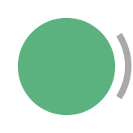

A class that generates a sequence of 3D orientation measurements produced by BNO055 9-axis inertial measurement unit.
This data stream class must be linked to an appropriate configuration, such as a ConfigureBno055, in order to stream 3D orientation data.
Inputs & Outputs
Generates a sequence of Bno055DataFrame objects, each of which contains a 3D orientation sample in various formats along with device metadata.
|
|
 |
|
Bno055DataFrame
| Data Frame Member | Type | Description |
|---|---|---|
Acceleration
|
Vector3 |
Gets the linear acceleration vector in units of m / s^2. |
Calibration
|
Bno055CalibrationFlags |
Gets MEMS subsystem and sensor fusion calibration status.
|
EulerAngle
|
Vector3 |
Gets the 3D orientation in Euler angle format with units of degrees. |
Gravity
|
Vector3 |
Gets the gravity acceleration vector in units of m / s^2. |
Quaternion
|
Quaternion |
Gets the 3D orientation represented as a Quaternion. |
Temperature
|
int |
Gets the chip temperature in Celsius. |
Clock
|
ulong |
Gets the acquisition clock count. Acquisition clock count that is synchronous for all frames collected within an ONI context created using CreateContext. The acquisition clock rate is given by AcquisitionClockHz. This clock value provides a common, synchronized time base for all data collected with an single ONI context. |
HubClock
|
ulong |
Gets the hub clock count. Local, potentially asynchronous, clock count. Aside from the synchronous Clock value, data frames also contain a local clock count produced within the oni.Hub that the data was actually produced within. For instance, a headstage may contain an onboard controller for controlling devices and arbitrating data stream that runs asynchronously from the AcquisitionClockHz. This value is therefore the most precise way to compare the sample time of data collected within a given oni.Hub. However, the delay between time of data collection and synchronous time stamping by Clock is very small (sub-microsecond) and this value can therefore be disregarded in most scenarios in favor of Clock. |
Properties
| Property | Type | Description |
|---|---|---|
DeviceName
|
string |
Gets or sets a unique device name. The device name provides a unique, human-readable identifier that is used to link software elements for configuration, control, and data streaming to hardware. This is often a one-to-one representation of a single oni.Device, but can also represent abstract ONI device aggregates or virtual devices. |